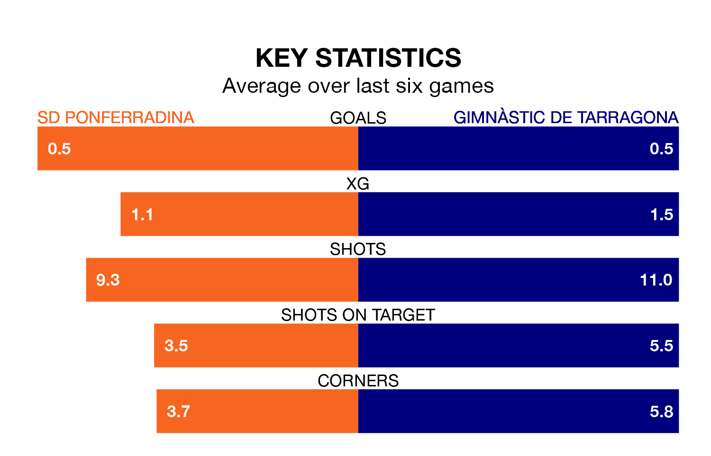

Gimnàstic de Tarragona travel to the Estadio El Toralín for Sunday's early match against SD Ponferradina looking to bounce back from defeat last time out in Primera Division RFEF Group 1.
Gimnàstic de Tarragona, who sit fourth in the league after 29 games, fell to a 1-0 home defeat to Unionistas de Salamanca CF on March 24.
They face a Ponferradina side who also lost their last match, a 2-0 defeat to SD Tarazona, and who sit fifth in the table.
In Andrés Tomás Prieto Albert, Ponferradina can rely on one of the league's safest pair of hands. He has kept 12 clean sheets in his 25 appearances this season, and only one other 'keeper – Cultural y Deportiva Leonesa's Miguel Bañuz Antón – has been able to prevent the opposition scoring on more occasions in Primera Division RFEF Group 1.
In Gimnàstic de Tarragona's net, Alberto Varó Lara also has 12 clean sheets in 20 games.
With 32 goals in 29 games so far this season, the away side are scoring more than average in the league with 1.1 goals per game. And they are conceding fewer than average, letting in 18 goals at a rate of 0.6 per game.
The hosts, meanwhile, are average scorers, with 1.0 goal per game. They have conceded 0.7 goals per game.
Ponferradina are in disappointing form in Primera Division RFEF Group 1, with one win and three draws from their last six games.
And also with a win and three draws over that period, Gimnàstic de Tarragona's form is identical – they have both taken six points from 18.
Updated: 12:16 (UTC), 25/03/24